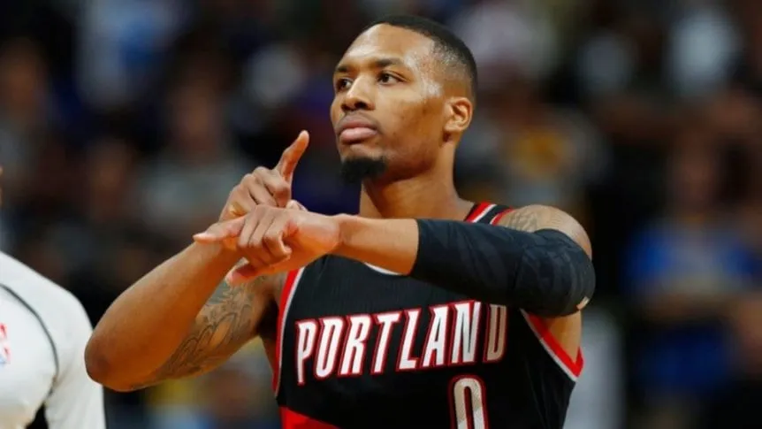

Damian Lillard se va de Portland
A menos de un mes para el comienzo de la nueva temporada NBA, Damian Lillard rompe el mercado. El ex guardia de Portland Trailblazers se mudará a Milwaukee Bucks para jugar con el griego Antetokounmpo y afrontar un nuevo desafío.